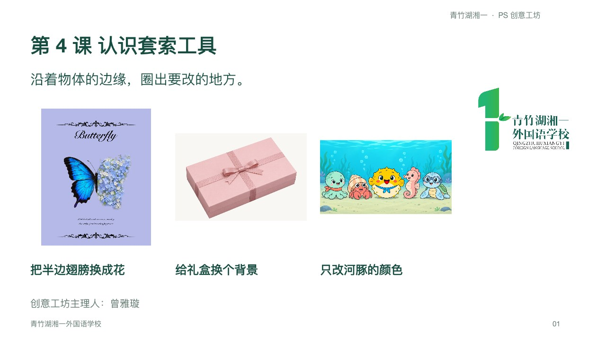

选修课 · PS 创意工坊
课件、操作手册和练习素材，按课次放在一起。先看老师示范，再打开素材试一试。
认识界面和常用工具，看看图片可以怎样修改。
文件含课堂视频，体积较大，点击后下载到电脑打开。
从做汉堡开始，理解图层怎样叠放，再试着布置一个小房间。
用矩形和椭圆画选区，练习加选、减选，做出小鸡和卡通头像。
把半边翅膀换成花，给礼盒换个背景，只让中间的河豚变鲜艳。

练习抠图、图层蒙版和前后遮挡，把图片组合成一张海报。
暂编第 5 课。沿用之前的海报方案，原文件内部仍标为第 4 课。
 青竹湖湘一课堂资源
青竹湖湘一课堂资源